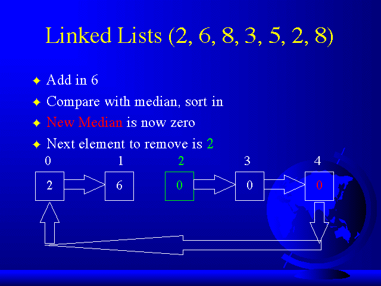
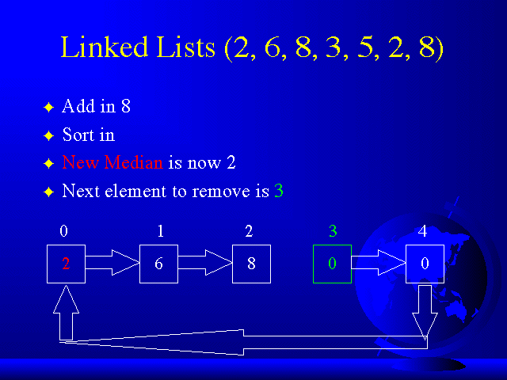
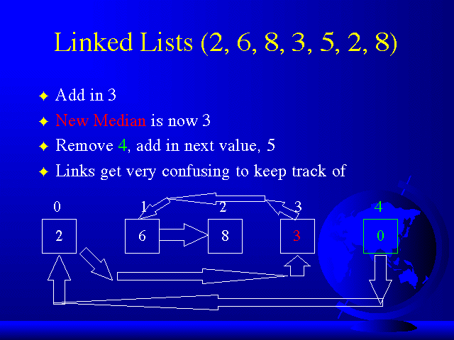

Lets add in the number "6" (From the list at the top of the slide).
Now, it's time for the value in the first element to be removed.
Again, we break the links to and from the first element. Read in the new value, "6".
Compare "6" to the old median, which is now the value zero in the THIRD array element.
We find it's correct position in the list, and then...

..."6" is now sorted into the list. Being that it is the highest number in the list, it is now at the top of the list.
Notice now that the NEW MEDIAN is now the value zero in the FOURTH array element, or the element that the old median (Array element 3) was pointing up to.

Let's try another example.
The next value to remove is in array element 2. Again, we break the links to and from it, assign in the value "8", compare with the old median (Array element 4), sort it in, and...

..."8" is sorted in, with the links pointing the correct way, and the NEW MEDIAN is now the value in the zeroeth element ("2"), or the element that the old median (Element 4) was pointing up to.
Looks easy, huh?
Lets do another one. Now, it's time to remove the value in array element 3 (The removal of array elements is sequential, as shown here, to ensure that all elements in the window stay in the window N times, or in this case N=5 times). We break all links to and from element 3, read in the new value ("3", from the list), compare with the old median ("2", in array element zero), and sort "3" in.
Now here's where it gets confusing....

...The elements are sorted in correctly now, but the links are going all over the place. And trying to map these out by hand in order to consider every instance get's challenging.
There are NO patterns at all with linked lists. I had to account for every instance imaginable. Instances that I had to concern myself with were:
- Removing elements from the top or the bottom of the list. Elements at the bottom of the list pointed DOWN to themselves. Elements at the top of the list pointed UP to themselves. Makes sense, where else would they point?
- Removing elements from the body of the list. Here I had to have it's surrounding links bypass the current element that I was assigning a new value to.
- Removing the element that contained the old median. Here you throw away the element that is used to compare the new value with in order to know which direction you must go within the list.
- Removing elements that are not at the position of the old median, but reading in new values that ARE EQUAL to the old median. Which always happens in Digital Image Processing. Because chances are that an area of a picture will be of roughly the same color.
- Removing the element that contained the old median, and reading in a new value equal to the old median.
- Removing elements immediately above or below the median. That way when the new median is needed, the program knows it.
If you were observant, you would've noticed that the new median only moves ONE position from the old median. The new median either moves up or down, or doesn't move at all. AND THIS IS THE ADVANTAGE OF NOT USING BUBBLE SORT OR QUICKSORT. There is no sorting, to a degree. You are only sorting in ONE value at a time. You are not taking a whole group of values and trying to sort them. This is why I begin the array with all predefined element values of "0", and all predefined links. The list is ALWAYS sorted, you only add in ONE value at a time, and this is a lot less computaitonal painful for the computer, and that is what makes Linked Lists fast. The list is always sorted, the median only moves one position at most, AND you don't have to keep reading in the data (No excessive file Input/Output) being that every time you move the window four old points stay in the window (With a window size N=5), while only ONE new point is added in. So why should you not keep those old values that you'll need anyway?
Linked Lists made the task of keep track of elements much easier. The biggest advantages were the reduction in file I/O, ease of attaining the new median, and eliminating the need to sort every window of values.
OK, now I think that we have a handle on Linked Lists, lets move on.
tassone@bucknell.edu